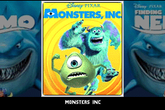
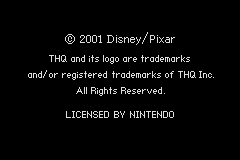

2 Games in 1 - Monsters, Inc. + Finding Nemo (USA)
Stateless / Passcode
Cartridge Identity
- Game Code
BDZE(FamilyBDZ)- Header Title
MONT_NEMO- Maker / Revision
78/ rev0- ROM Size
- 16.0 MiB (16,777,216 B)
- Save Media
None / Unknown- SHA-256
78266941da152537fb3a0bea9155734e18946760664f2c74c7facfc5fc8a49e1- Engine / SDK Group
comm-005(81 families)
Screenshots


Cartridge Storage Architecture: Stateless / Passcode
Zero non-volatile battery hardware: This cartridge PCB contains ROM only (no SRAM, Flash, or EEPROM chips). Progression is preserved via on-screen passcodes or session-only gameplay. No
.sav file is generated or required.
ROM Assets, Compression & Audio
- BIOS Compression
- LZ77 (
0x10): 442 streams · RLE (0x30): 0 streams - ROM Pointer Tables
- 127 tables (18 pointing to validated compressed streams)
- SDK Backup Tags
- None
Hardware MMIO Subsystems
dma_transfer0x8bf1c34,0x8bf23fc,0x8bf2404ppu_display0x800206c,0x8befdc8,0x8befe04,0x8bf1580
Regional Variants & Revisions (Family BDZ)
- 2 Games in 1 - Die Monster AG + Findet Nemo (Germany) (
BDZD, 16 MiB) - 2 Games in 1 - Monsters & Co. + Alla Ricerca di Nemo (Italy) (En,Fr,It+Es,It) (
BDZI, 16 MiB) - 2 Games in 1 - Monsters en Co. + Finding Nemo (Netherlands) (En,Es,Nl+Fr,Nl) (
BDZH, 16 MiB) - 2 Games in 1 - Monsters, Inc. + Finding Nemo (Europe) (
BDZP, 16 MiB) - 2 Games in 1 - Monstres & Cie + Le Monde de Nemo (France) (En,Fr,It+Fr,Nl) (
BDZF, 16 MiB) - 2 Games in 1 - Monstruos, S.A. + Buscando a Nemo (Spain) (En,Es,Nl+Es,It) (
BDZS, 16 MiB)